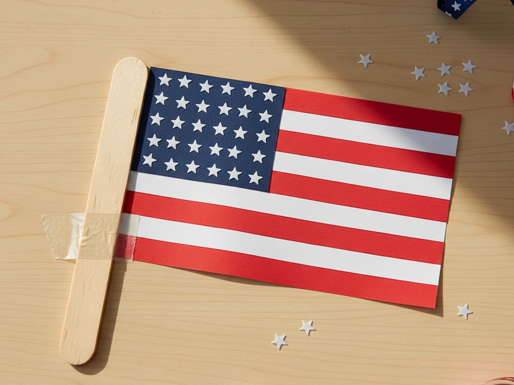
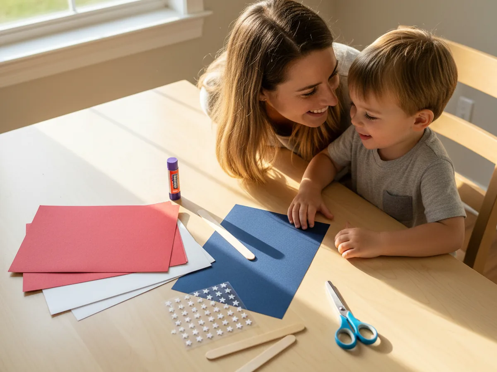
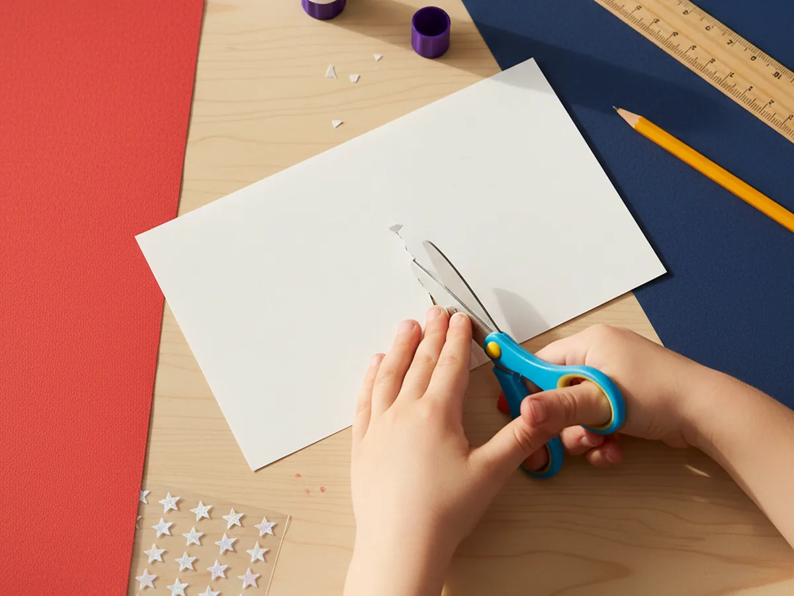
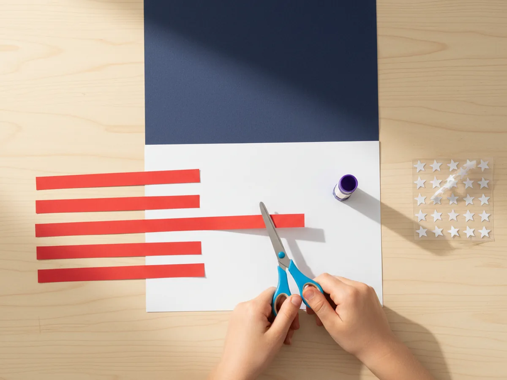
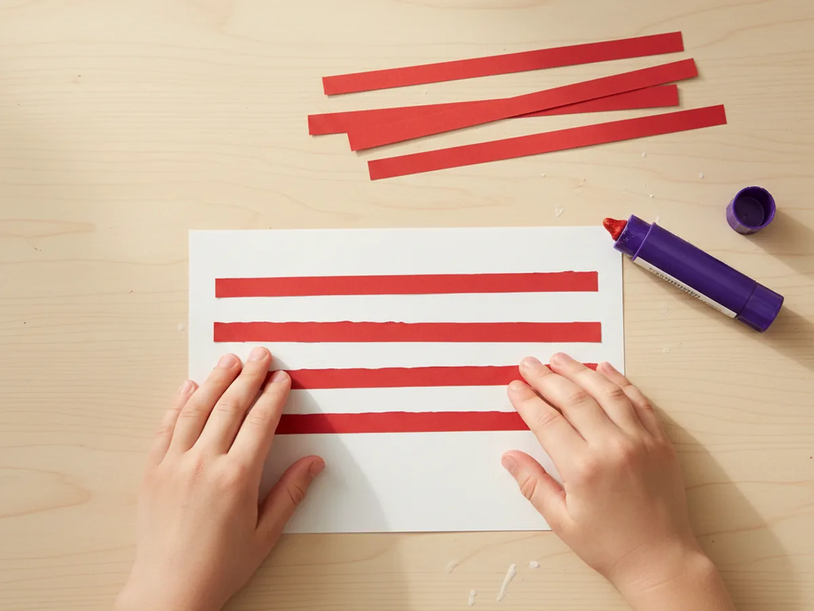
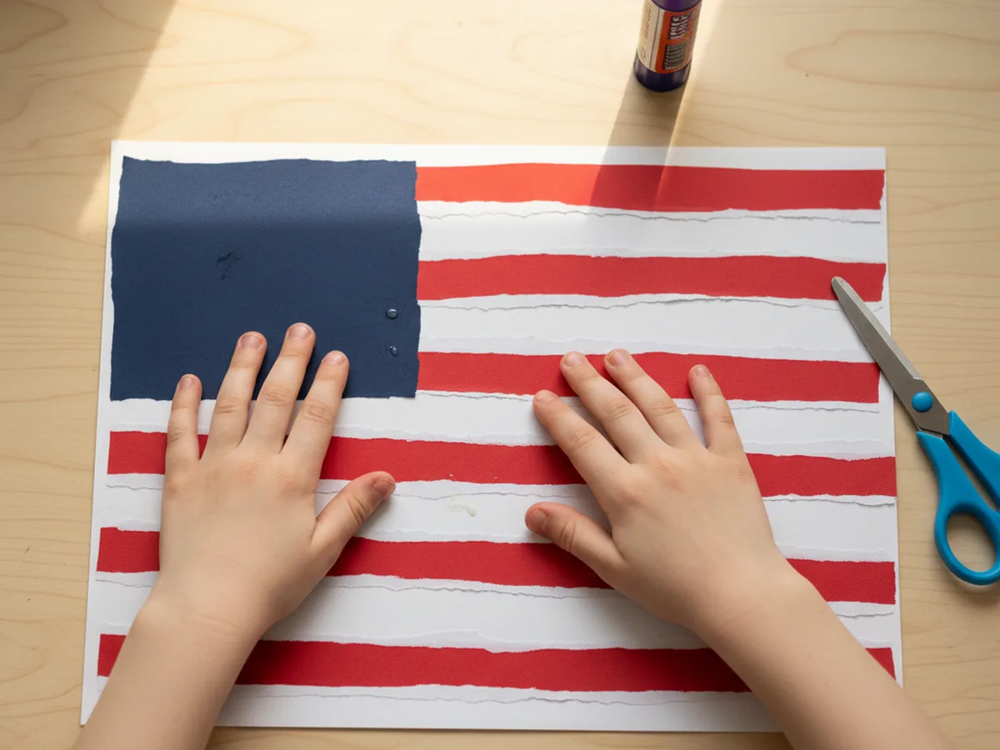
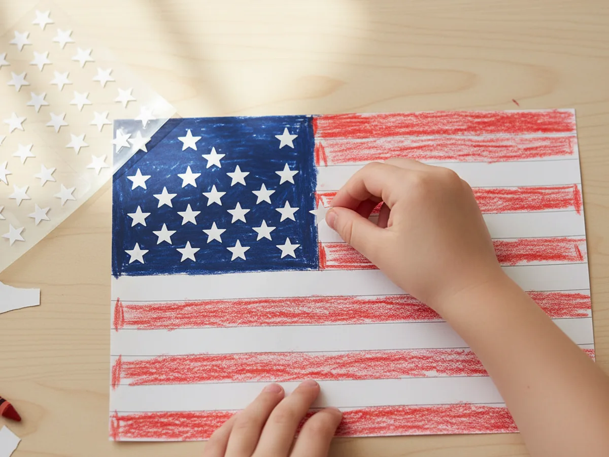
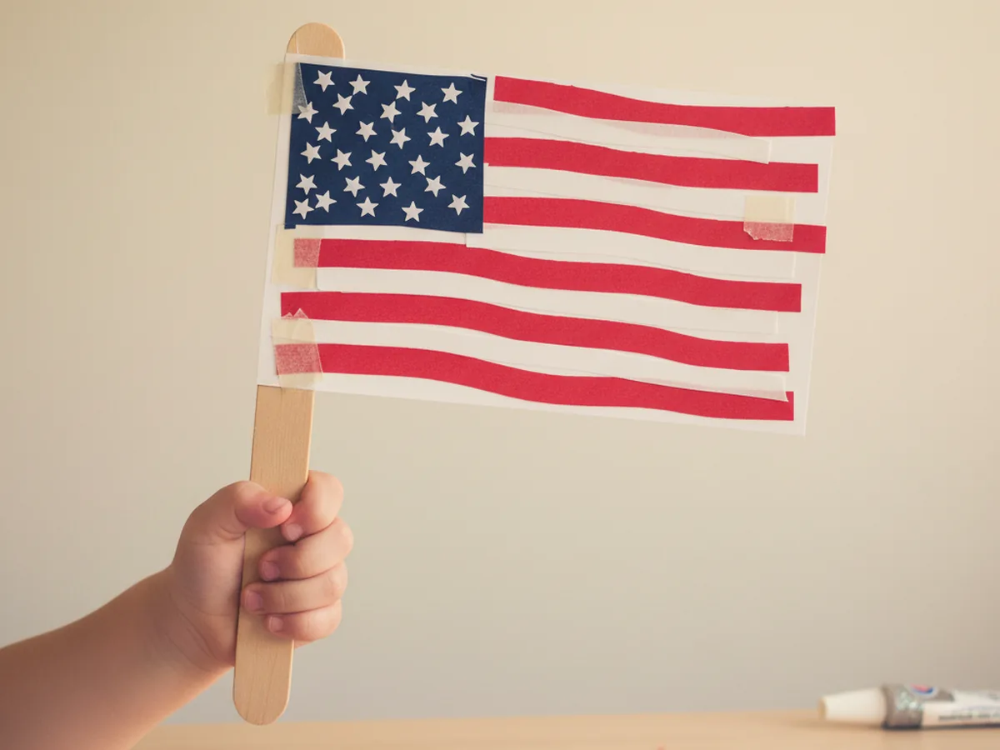

If your family loves a sweet summer activity that doubles as a tiny piece of patriotic decor, this american craft paper flag project is going to feel like a perfect fit. It comes together from a few sheets of red, white, and blue construction paper, a handful of star stickers, and a jumbo popsicle stick handle, and the finished flag looks adorable taped to the fridge, lined up along a windowsill, or carried in a backyard parade. The whole project takes about thirty minutes from start to finish, which makes it a wonderful slow afternoon activity for Memorial Day weekend or the days leading up to the Fourth of July. 🇺🇸
Even a four year old can do most of this craft with just a little help, and older kids will have a great time placing each star sticker exactly where they want it. Every american craft paper flag turns out a little different, and that is exactly what makes the finished pile so charming. Grab your supplies, pour your child a cup of lemonade, and let me walk you through it.
Why Kids Love This Craft
The American flag has a kind of friendly familiarity that little ones recognize from their world: parades, fireworks, picture books, and family barbecues. When a child gets to make their own easy american craft paper flag, they feel like they are creating a little piece of those celebrations with their own two hands. A lot of kids end up waving their finished flag around the kitchen for the rest of the afternoon, which is honestly the best review a craft can get.
This project also gives small hands gentle practice with several useful skills. Cutting straight strips, gluing them in a neat order, lining up the blue corner, and pressing on the star stickers all build fine motor control, focus, and confidence. The steps are simple enough that no one gets frustrated, and the result looks impressive enough that your child will feel genuinely proud of what they made.
Best of all, this patriotic american craft paper project has no single right way to look. Some flags come out perfectly even, some come out with cheerfully crooked stripes, and some have stars scattered all over the blue square instead of in neat rows. Every single one is precious. The open-ended feel lets the personality of your little crafter shine through. ✨

What You'll Need
Here is everything you need to make this american craft paper flag at home. Lay the supplies out on the table before you sit down with your child so the activity flows smoothly and nobody has to get up mid-project to dig for the glue stick.
- Crayola Construction Paper (240 Sheets, 12 Colors), includes the red, white, and navy blue shades you need for the flag.
- White Star Shape Stickers (1 Inch, 500 Count), peel and stick stars that make the star field fast and frustration-free.
- GUSTO Jumbo 6 Inch Wooden Craft Sticks (100 Count), sturdy popsicle stick handle so your child can wave the flag like a real parade flag.
- Fiskars 5 Inch Pointed-Tip Kids Scissors, sized for little hands cutting clean straight stripes.
- Elmer's Disappearing Purple School Glue Sticks (30 Count), washable and easy to twist for small fingers.
- A pencil and a ruler, for lightly drawing the stripe lines and the white rectangle.
- A small piece of clear tape, for attaching the craft stick to the back of the flag.
Step-by-Step Instructions
This american craft paper flag project is genuinely easy, even for a first-time crafter. Take it one step at a time and let your child do as much as they comfortably can. 💛
Step 1: Cut the White Paper Base
Start with a sheet of white construction paper. Use a pencil and ruler to lightly mark a rectangle about seven inches wide and five inches tall, then cut it out and set it in the middle of your work space. This is the base of your american craft paper flag, so leave a little room around it for the red stripes and the blue corner coming next.
If your child is younger, draw the rectangle yourself and let them focus on the cutting. Slightly wobbly edges actually give the flag a sweeter, more handmade look.

Step 2: Cut the Red Paper Stripes
Take a sheet of red construction paper and cut six thin strips for the stripes. Each strip should be about half an inch tall and just slightly longer than the width of the white rectangle so you can trim any overhang at the end. These stripes are what give the simple american craft paper flag its instantly recognizable shape.
You can fold the red paper in half a few times to cut multiple strips at once, which speeds things up and makes the strips more even. If a strip ends up a little crooked, that is totally fine. Real handmade flags look better with a touch of personality.

Step 3: Glue the Stripes onto the White Base
Now the flag really starts coming together. Run a glue stick along the back of one red strip and press it across the top edge of the white rectangle. Leave a small white gap below it, then glue the next red strip. Keep going until you have six red strips evenly spaced down the rectangle, with seven white stripes showing through between and around them. Smooth each one down firmly so it sticks well.
If the strips overhang the sides of the white base, you can trim them flush with scissors at the end or let them stay for a slightly playful look. Either way works beautifully here.

Step 4: Add the Blue Canton
From a sheet of navy blue construction paper, cut a small rectangle about three inches wide and two and a half inches tall. This is called the canton, and it covers the upper left corner of the flag. Run the glue stick across the back of the blue rectangle and press it down firmly over the top left of your handmade american craft paper flag, lined up with the top and left edges. It should cover the first three or four red and white stripes.
The blue corner does not need to be a perfect rectangle. A slightly uneven shape still looks like a real flag, especially once the stars go on top.

Step 5: Press On the White Stars
This is the most magical step for most kids. Peel a small white star sticker off the sheet and let your child press it onto the navy blue rectangle. Add about nine to twelve stars in soft rows so the blue space looks nicely filled in. The exact pattern does not have to be perfect. The fluffy field of stars is what really makes the kid-friendly american craft paper flag pop with personality.
If you do not have star stickers, cut tiny white paper stars by hand and glue them on instead. A simple five point star drawn with a pencil and cut out works wonderfully.

Step 6: Attach the Craft Stick and Wave
Flip the flag over and lay a jumbo wooden craft stick along the left edge of the back, with about half of the stick sticking out below the flag like a handle. Use one or two pieces of clear tape to fasten the stick firmly to the paper. Then flip the flag back over, hold up your finished american craft paper flag, and give it the proud family showing it deserves. Wave it, tape it to a window, or line up a row of them across the mantel for a sweet Fourth of July display.
If your little one is curious about the meaning of the design, the simple story of the flag of the United States is a kid-friendly mix of history and tradition that pairs nicely with this activity.

Variations to Try
Handprint Stars Version: Instead of star stickers, dip your child's thumb into a small puddle of white paint and let them stamp little thumbprint stars onto the blue canton. The keepsake factor goes way up, and each tiny print becomes a sweet record of how small their hand was that summer.
Mini Flag Garland: Make four or five small flags using slightly thinner paper rectangles, skip the popsicle stick handles, and tape each flag onto a long piece of red, white, and blue ribbon. Drape the garland across a doorway or along a porch railing for an instant Fourth of July decoration.
Glitter Star Field Version: Skip the stickers and let your child spread a thin layer of glue on the blue corner, then sprinkle silver glitter over the top. Shake off the excess and you get a sparkly star field that catches the light beautifully, perfect for an evening backyard celebration.
Final Thoughts
This american craft paper project is one of those simple little activities that gives back so much more than just a finished flag. It gives you a quiet half hour with your child and a handmade keepsake that often gets played with for days after the craft itself is done. The supplies are basic, the steps are gentle, and the result always brings a big smile. 🎆
If your family makes a few of these together, pin this tutorial on Pinterest so other craft-loving mamas can find it. Happy crafting, friend.
More Crafts You'll Love
If your little one enjoyed this American craft paper flag, they will adore these other cheerful paper projects too: